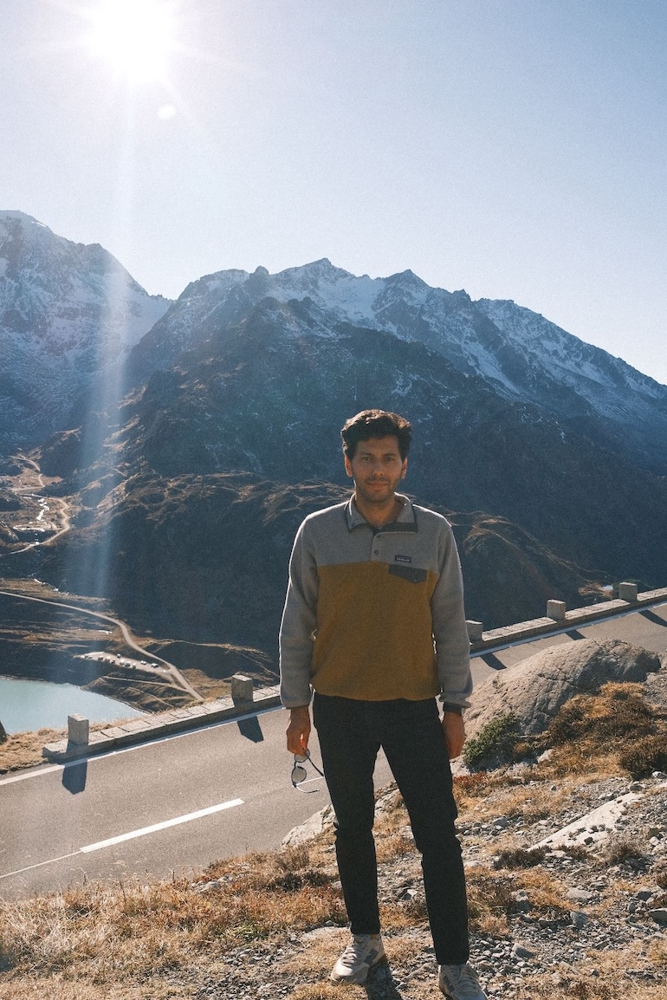

About
I work across biostatistics, bioinformatics, and interpretable machine learning, with a focus on human health and environmental toxicology.
Trained in pure mathematics, I now develop quantitative methods and reproducible workflows for toxicology and biological data analysis. My work is guided by a simple requirement: methods should not only perform well, but also remain transparent, traceable, and usable in practice.
I am an interdisciplinary researcher specializing in biostatistics, bioinformatics, and interpretable machine learning, with applications in human health and environmental toxicology. I hold a doctorate in pure mathematics (Dr. rer. nat.), with a focus on the geometry of moduli spaces.
In startup environments, I have frequently served as a solution architect for quantitative methods, translating scientific and regulatory requirements into end-to-end, reproducible computational workflows. This includes designing data and analysis pipelines for in vitro toxicology, where transparency, uncertainty, and traceability are essential for results to be trusted and usable.
"Methods should remain understandable when decisions depend on them."
My work spans concentration-response modeling, BMC/BMD estimation, and uncertainty-aware evaluation, as well as interpretable machine learning for biological data, especially computer vision for microscopy images.

Beyond technical contributions, I also work at the intersection of science and decision-making. I have served as a hearing expert for the EFSA Neurotoxicity Working Group on regulatory statistics.
"Good analysis should make uncertainty clearer, not hide it."
Across these projects, I am interested in analytical systems that are careful, transparent, and usable: software, statistical workflows, and models that support scientific judgment rather than obscure it. That is the perspective I bring to work at the intersection of mathematics, toxicology, and machine learning.